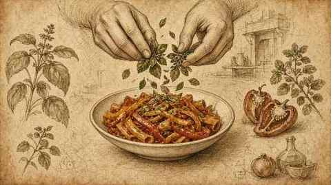

I
Peperonata romana
Roman peperonata
Peperoni cotti fino a cedere la dolcezza, conclusi col pomodoro alla romana, poi usati come sugo per rigatoni di kamut.
Peppers cooked until they surrender their sweetness, finished with tomato in the Roman manner, then used as a sauce for kamut rigatoni.
Andrea Antonini · Italia Squisita